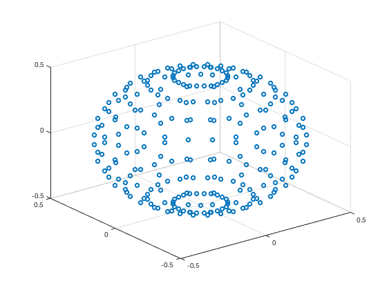
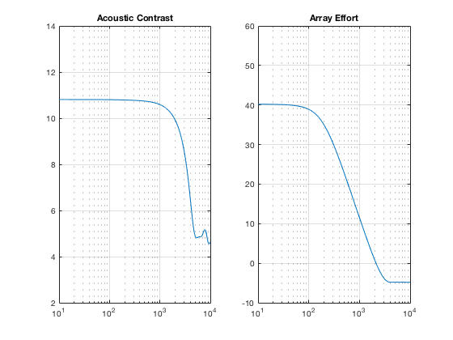

Contents
clc
clear
freq = 10.^(1:.005:4);
iter = 1;
Source positions in meters [x,y], can take any number of control sources
Cs = [ 0.04 0 0;
0 0 0;
-0.04 0 0];
[Sph,deg,nX,nY,nZ] = evenSph(.5,15);
evenSph(.5,15);

Bright
Zind = find(nZ(:,1) == 0);
bind = find(deg == 0);
bpos = [nX(Zind,bind),0,0];
Dark
[~,indx]=ismember(bpos,Sph,'rows');
dpos = [Sph(1:indx(1)-1,:,:);Sph(indx(1)+1:end,:,:)];
for f = freq
omega = 2*pi*f;
c = 344;
lambda = c./f;
rho = 1.225;
rad = .5;
k = (2*pi)./lambda;
Length
for i = 1:size(Cs,1)
D{i} = sqrt((dpos(:,1)-Cs(i,1)).^2 + (dpos(:,2)-Cs(i,2)).^2 + (dpos(:,3)-Cs(i,3)).^2);
B{i} = sqrt((bpos(:,1)-Cs(i,1)).^2 + (bpos(:,2)-Cs(i,2)).^2 + (bpos(:,3)-Cs(i,3)).^2);
Gd(:,i) = 1j*omega*rho*exp(-1i*k.*D{i})./(4*pi*D{i});
Gb(:,i) = 1j*omega*rho*exp(-1i*k.*B{i})./(4*pi*B{i});
end
Build Full G matrix
G = [Gb;Gd];
a = [ones(size(Gb,1),1);zeros(size(Gd,1),1)];
Solve using PM
q = (G'*G)\G'*a;
Rd = (Gd'*Gd);
Rb = (Gb'*Gb);
Lb = size(Gb,1);
Ld = size(Gd,1);
Build single monopole reference for Array Effort
Ref = 1j*omega*rho*exp(-1i*k.*rad)./(4*pi*rad);
qmono = mean(Gb*q)/Ref;
AE(iter) = 10*log10((q'*q)./((qmono'*qmono)));
AC(iter) = 10*log10((Ld.*real(q'*Rb*q))./(Lb.*real(q'*Rd*q)));
iter = iter + 1;
end
subplot(1,2,1)
semilogx(freq,AC),title('Acoustic Contrast')
ylim([2 14])
grid
subplot(1,2,2)
semilogx(freq,AE),title('Array Effort')
ylim([-10 60])
grid
